最新更新：请参见《针对51单片机的315Mhz无线模块协议与软件的改进》，有效解决了传输距离只有几米的问题。
=======================原文=========================
一直想试试廉价的315Mhz无线模块。这几天总算是研究了个透彻。
模块分为发射模块与接收模块，样子如图：
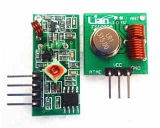
图中左边的那个是接收模块，而右边的那个是发送模块。这么一对居然只要2.74元。
===================阶段一：焊接天线=======================
网上都说可以不带天线直接使用，呵呵，我被坑的不轻。不带天线的话，我手指靠过去，不接触，就能产生非常大的电磁干扰了。而焊接上天线后，完全没有干扰了。所以，第一步就是，焊接天线。
天线最好使用有点粗度的铜丝。我这里有直径1mm的漆包线，作为天线再好不过了。天线要多长才合适呢？这个涉及到一些无线电学的知识了，我就直接说结论吧——天线的最佳长度是波长的1/4。
我们要使用315Mhz频率的无线电，那么天线长度就应该是L=1/4*(c/f)=1/4*(3*10^8)/(315*10^6)=0.238m。也就是说，天线的长度应该是23.8厘米。
OK，剪下两段长23.8厘米的漆包线，把一头的漆刮干净，焊接到天线引脚上去。天线引脚的位置如下图：
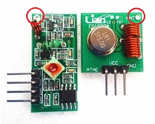
最终焊接之后的样子：
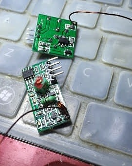
我的焊接水平越来越高啦~(@^_^@)~！
============阶段二：熟悉315Mhz无线模块的电气特性==========
使用时的连线如下：
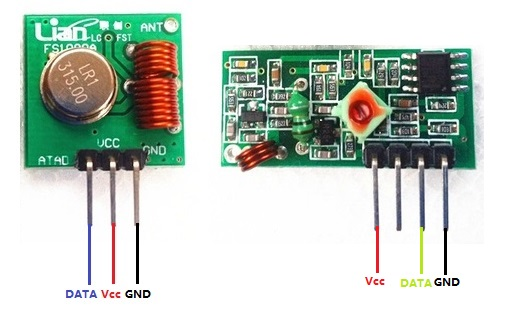
当给发送模块的DATA引脚拉高时，接收模块的DATA引脚就输出高电平，当给发送模块的DATA引脚拉低时，接收模块的DATA引脚就输出低电平。但是，输出引脚无法长时间保持某个电平。举个例子：如果给输入引脚不停输入0,1,0,1,0,1…的序列，间隔是0.1s，那么输出引脚也会一样地输出0,1,0,1,0,1…，此时，一对315Mhz无线模块在传输数据时可以等效为一根导线。但是，如果输入引脚始终保持1，那么，输出引脚先输出一段时间的1，然后逐渐衰减到模糊状态（即介于0与1之间的电平）。同样，如果输入引脚始终保持0，那么，输出引脚先输出一段时间的0，然后逐渐增加到模糊状态。换句话说，当且仅当有持续快速的脉冲时，收发模块才能等效于一段导线。否则，电平会趋于一个模糊状态。
==================阶段三：设计串行传输协议================
本来打算直接用315Mhz无线传输模块来实现串口的透传，但是实际测试发现，传输的稳定性相当差。究其原因，是因为串口协议是建立在传输链路稳定的假设上的。举个简单的例子，如果使用串口来发送字节10101010与11101010（二进制，假设高位先发），串口是8-n-1模式（8个数据位、一个起始位，一个停止位、无校验位），那么电平的变化是这样的：
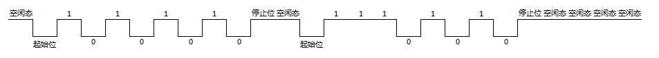
如果因为某些特殊的原因（比如线路接触不良），最开始的[空状态、起始位、1、0]四个位没有接收到，那么信号就会被当做这样：
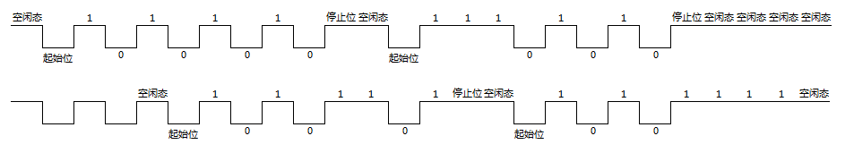
于是接收到的就是10101101与10101111。我认为一个协议，可以因为物理层的不稳定而无法接受到数据，但不能因此接受到错误的数据！所以不能直接用串口。
通过这个例子可以想到，这个新的串行协议，必须有一个很明确的起始位。又考虑到315Mhz模块的电气特性，不能使用高低电平来表示数据。
直接说我设计的串行协议：
（1）使用两个脉冲之间的时间长短来表示数据；
（2）定义三个互无交集的区间A,B,C，如果两个脉冲之间的时间长短位于A时，则认为是0，如果位于B时，则认为是1，如果位于C时，则认为是RST；
比如我定义A=(500us,1500us)，B=(1500us,2500us)，C=(2500us,3500us)，然后发送如下脉冲序列：
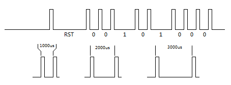
那么就是00101000，是不是很简单~~~╮(╯▽╰)╭~~~
由于只要收到一个RST那么就意味着一个新的字节的开始，于是不会出现串口协议那种“上个字节的后半部分与下个字节的前半部分粘成一个字节”的窘境。
====================阶段四：代码实现=====================
实现使用了51单片机的定时器与外部中断，并且采用异步的编程模式，即接收到一个字节或发送完成一个字节就回调一个回调函数。
直接上代码：
RF315.h
/* 该文件定义了RF315操作 void RF315_set_recv_done_handler(RF315_recv_done_handler p_handler); 设置接收完毕的回调函数。接收完毕回调函数形如void f(uint8 p_byte) void RF315_set_send_done_handler(RF315_send_done_handler p_handler); 设置发送完毕的回调函数。发送完毕回调函数形如void g() void RF315_send(uint8 p_byte); 发送一个字节。发送字节之前请务必确保已经通过RF315_set_send_done_handler设置了 发送回调函数（可以为0），否则会跑飞。 如果需要修改使用的定时器与外部中断，请到RF315.c中修改。 */ #ifndef RF315_H #define RF315_H #include "types.h" typedef void (*RF315_recv_done_handler)(uint8 p_byte); typedef void (*RF315_send_done_handler)(); void RF315_set_recv_done_handler(RF315_recv_done_handler p_handler); void RF315_set_send_done_handler(RF315_send_done_handler p_handler); void RF315_send(uint8 p_byte); #endif
RF315.c
/*
如果需要修改发送引脚，修改SEND_PIN
如果需要修改使用定时器，修改TIMER_NO，取值是0或1
如果需要修改外部中断，修改EX_INT_NO，取值是0或1
如果需要修改发送的脉冲间隔，修改LEN_0、LEN_1和LEN_X
如果需要修改发送的脉冲的高电平宽度，修改PULSE_WIDTH
如果需要修改容错范围，修改RANGE
*/
#define SEND_PIN P3^7
#define TIMER_NO 0
#define EX_INT_NO 0
#define LEN_0 10000
#define LEN_1 20000
#define LEN_X 30000
#define PULSE_WIDTH 1000
#define RANGE 5000
#if(TIMER_NO!=0&&TIMER_NO!=1)
#error "TIMER_NO must be 0 or 1"
#endif
#if(EX_INT_NO!=0&&EX_INT_NO!=1)
#error "EX_INT_NO must be 0 or 1"
#endif
#if(TIMER_NO==0)
#define TMOD_SET() TMOD&=0xF0;TMOD|=0x01;
#define THX TH0
#define TLX TL0
#define TRX TR0
#define ETX ET0
#define TFX TF0
#define TIMER_INT_VECTOR 1
#else
#define TMOD_SET() TMOD&=0x0F;TMOD|=0x10;
#define THX TH1
#define TLX TL1
#define TRX TR1
#define ETX ET1
#define TFX TF1
#define TIMER_INT_VECTOR 3
#endif
#if(EX_INT_NO==0)
#define ITX IT0
#define EXX EX0
#define EX_INT_VECTOR 0
#else
#define ITX IT1
#define EXX EX1
#define EX_INT_VECTOR 2
#endif
#include "RF315.h"
#include "reg51.h"
sbit sg_send_pin=SEND_PIN;
static RF315_recv_done_handler sg_recv_handler;
static RF315_send_done_handler sg_send_handler;
static uint8 sg_step;
static uint8 sg_byte;
static void start_timer()
{
TMOD_SET();
THX=TLX=0;
TFX=0;
TRX=1;
}
static void stop_timer()
{
TRX=0;
}
static uint16 get_time()
{
if(TFX)
return 65535;
return (THX<<8)|TLX;
}
static void clear_timer()
{
TFX=0;
THX=TLX=0;
}
static void set_next_timer(uint16 p_tick)
{
uint16 t_rest=65535-p_tick;
THX=t_rest>>8;
TLX=t_rest;
}
static void enable_timer_int()
{
ETX=1;
EA=1;
}
static void disable_timer_int()
{
ETX=0;
}
static bool is_in_range(uint16 p_avg,uint16 p_range,uint16 p_value)
{
if(p_value<p_avg-p_range)
return 0;
if(p_value>p_avg+p_range)
return 0;
return 1;
}
static void enable_ext_int()
{
ITX=1;
EXX=1;
EA=1;
}
static void disable_ext_int()
{
EXX=0;
}
void RF315_set_recv_done_handler(RF315_recv_done_handler p_handler)
{
if(p_handler!=0)
{
sg_recv_handler=p_handler;
sg_step=0;
sg_byte=0;
start_timer();
enable_ext_int();
}
else
{
disable_ext_int();
stop_timer();
}
}
static void on_ex_int() interrupt EX_INT_VECTOR
{
uint16 t_len=get_time();
clear_timer();
if(is_in_range(LEN_X,RANGE,t_len))
{
sg_step=0;
sg_byte=0;
}
else if(is_in_range(LEN_0,RANGE,t_len))
++sg_step;
else if(is_in_range(LEN_1,RANGE,t_len))
{
sg_byte|=1<<sg_step;
++sg_step;
}
else
{
sg_step=0;
sg_byte=0;
}
if(sg_step==8)
if(sg_recv_handler!=0)
sg_recv_handler(sg_byte);
}
void RF315_set_send_done_handler(RF315_send_done_handler p_handler)
{
sg_send_handler=p_handler;
}
void RF315_send(uint8 p_byte)
{
sg_step=0;
sg_byte=p_byte;
start_timer();
enable_timer_int();
set_next_timer(0);
}
static void on_timer_int() interrupt TIMER_INT_VECTOR
{
if(sg_step%2)
{
if(sg_step==21)
{
stop_timer();
if(sg_send_handler!=0)
sg_send_handler();
return;
}
else
{
sg_send_pin=1;
set_next_timer(PULSE_WIDTH);
}
}
else
{
uint16 t_timer;
if(sg_step==0)
t_timer=LEN_X;
else if(sg_step==2)
t_timer=LEN_X-PULSE_WIDTH;
else if(sg_step==20)
t_timer=PULSE_WIDTH;
else
{
if((sg_byte>>((sg_step-4)>>1))&0x01)
t_timer=LEN_1-PULSE_WIDTH;
else
t_timer=LEN_0-PULSE_WIDTH;
}
sg_send_pin=0;
set_next_timer(t_timer);
}
++sg_step;
}
====================阶段五：相关参数的探讨=================
这里有5个宏定义的参数需要探讨一下：
#define LEN_0 10000 #define LEN_1 20000 #define LEN_X 30000 #define PULSE_WIDTH 1000 #define RANGE 5000
LEN_0就是发送0的脉冲间隔，LEN_1就是发送1的脉冲间隔，LEN_X就是发送RST的脉冲间隔，而PULSE_WIDTH就是脉冲高电平的脉宽。脉冲宽度越小，发送每一位的能耗就越低，但是宽度过小，无法让发送模块发送出无线电。
LEN_0、LEN_1、LEN_X越长，传输速度越低，但是越可靠。但是也不能过大，太大的话“无线模块不能当做导线了”。
RANGE是区间的大小。当脉冲间隔介于(LEN_0-RANGE,LEN_0+RANGE)时，被当做0，当脉冲间隔介于(LEN_1-RANGE,LEN_1+RANGE)时，被当做1，当脉冲间隔介于(LEN_X-RANGE,LEN_X+RANGE)时，被当做RST。RANGE取值越小，传输越不容易出错，但是丢包率会升高。另外，RANGE的取值必须使三个区间都互无交集。
====================阶段六：测试用例=================
测试用例使用了串口来输出接收到的数据，代码如下：
main.c
#include "types.h"
#include "buffered_uart.h"
#include "RF315.h"
#include "reg51.h"
void on_recv(uint8 p_byte)
{
uart_write(p_byte);
}
void on_send()
{
RF315_send(5);
}
sbit BOOT=P3^4;
void main()
{
uint8 t_buffer[2];
uart_init(2400,t_buffer,2);
if(BOOT)
{
RF315_set_send_done_handler(on_send);
RF315_send(5);
while(1);
}
else
{
RF315_set_recv_done_handler(on_recv);
while(1);
}
}
项目目录如下：
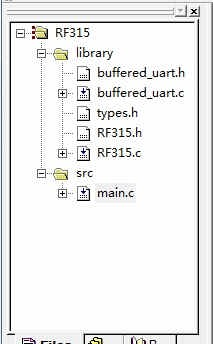
其中的buffered_uart.h、buffered_uart.c和types.h请参见《为51单片机打造带接收缓冲区的串口（Buffered Uart）》。
电路图如下：
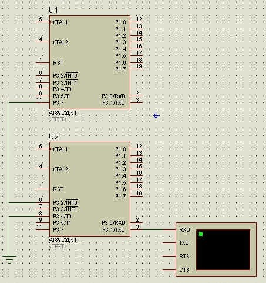
请注意把虚拟终端的波特率设置为2400，并且使用“Hex Display Mode”：
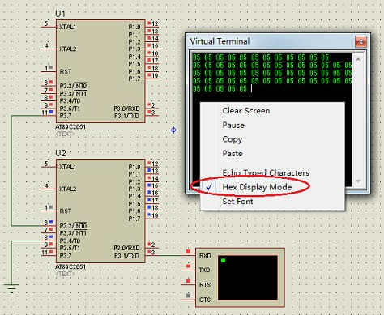
可以看到虚拟终端里不停输出05 05 05 05…
真实硬件电路的测试时，最好在Vcc与GND之间加一个大容量的电容器，以消除电源电压波动带来的电磁干扰。因为经过实际测试发现，电磁干扰对信号的传输影响非常大！！
真实电路如下：
发送电路：
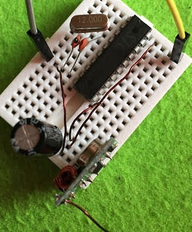
接收电路：
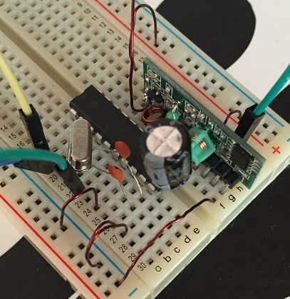
接收端通过串口不停输出05 05 05 05：
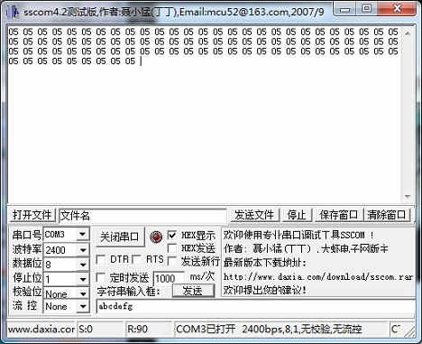
=================关于51单片机遥控距离很近的问题==============
其实写完这篇文章之后，还是一直有一个疑惑在心里，忐忑不安——实践发现，传输距离非常近，只有几米，完全达不到网上说的几百米。一直不明白是什么问题。今天突然在网上找到了原因：
由于51单片机一般都使用12MHz的晶体作为起振，这样其本身的本振就将近有300MHz的本振频率由I/O口向外辐射的电磁波干扰源，造成315MHz接收距离很近，甚至不能接收。解决办法：建议改用频点较高的接收频率，如433MHz就可增加遥控距离；或把单片机屏蔽起来。
单片机模拟2262时一般都很正常，然而单片机模拟2272解码时通常会发现遥控距离缩短很多，这是因为单片机的时钟频率的倍频都会对接收模块产生干扰，51系列单片机工作的时候，会产生比较强的电磁辐射，频率范围在9MHZ-900MHZ，因此它会影响任何此频率内的无线接收设备的灵敏度，解决的方法是尽量降低CPU 晶体的频率。测试表明：在1M晶体的辐射强度，只有12M晶体时的1/3，因此，如果把晶体频率选择在500K以下，可以有效降低CPU的辐射干扰。另外一个比较好的方法是：将接收模块通过一个3芯屏蔽电缆（地，+5V，DATA，屏蔽线的地线悬空）将模块引出到离开单片机2米以外，则不管51CPU使用那个频率的晶体，这种干扰就会基本消除。对于PIC单片机，则没有上述辐射干扰。可以任意使用。 还可以改用频点较高的接收频率，如433MHz就可增加遥控距离，或者需要采用一些抗干扰措施来减小干扰。比如单片机和遥控接收电路分别用两个5伏电源供电，将DF接收板单独用一个78L05供电，单片机的时钟区远离DF接收模块，降低单片机的工作频率，中间加入屏蔽等。
大量的MCS51教材中推荐大家使用的是12 MHz及11.0592MHz的晶体，这些晶体在一般场合使用没有问题，但在此却不可以，它们在300MHz左右仍然能够产生较大的干扰，为解决单片机运行速度与电磁干扰的矛盾，建议采用频率为4MHz或3.58MHz的晶体。
隔离：为了有效抑制单片机对接收模块的电磁干扰，建议采用①电源隔离；②端口隔离；端口隔离可采用三极管或比较器。实践表明采用隔离的效果非常明显。